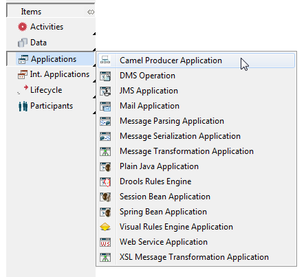
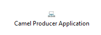
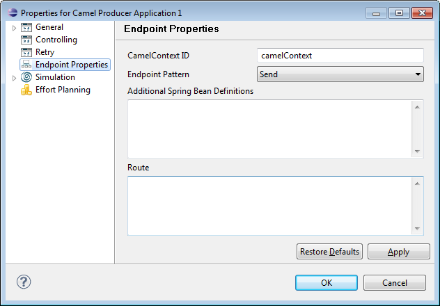
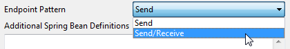
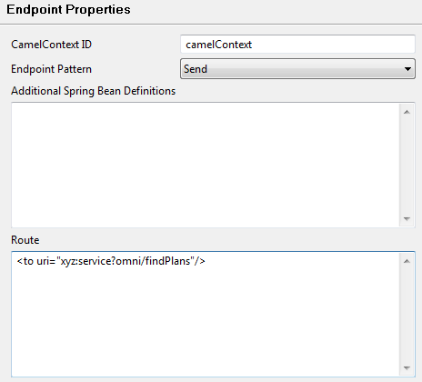
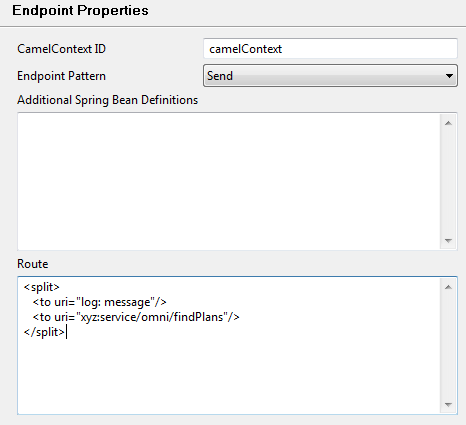
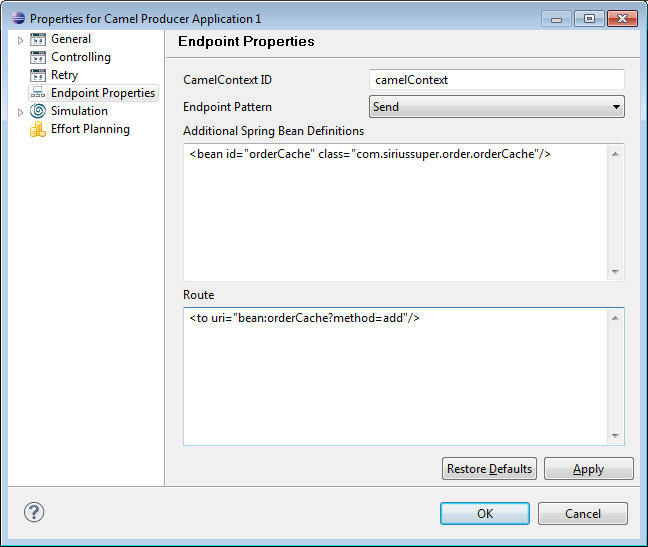

The Camel Producer Application Type allows you to specify arbitrary Camel Routes to be invoked from activities in Process Models at runtime and ensure connectivity via simple XML configurations leveraging the connectivity capabilities of Apache Camel.
To create a Creating Camel Producer Application, select Applications > Camel Producer Application in the diagram toolbar.

Figure: Create a Camel Producer Application
Click on the diagram to place the symbol for the Camel Producer Application there.

Figure: Camel Producer Application
Double-click the application symbol to open the properties page.

Figure: Camel Producer Application Properties Page
In the Endpoint Properties section, you can set properties for the following:
The CamelContextID defines the ID of the CamelContext object, which represents the Camel runtime system.
Endpoints represent the end of a channel through which a system can send or receive messages. Endpoints are usually referred to via their URIs.
With the Endpoint Pattern you may specify whether the Camel Producer Application is only supposed to send or also receive Message Exchange data.

Figure: Set Endpoint Pattern
In the Route section you can define arbitrary Camel Routes to be invoked from activities in the Process Model at runtime, like:

Figure: Simple Route example
or more complex cases like

Figure: Complex Route example
In all cases, you need to ensure that the Camel Components used in the tags are part of your Runtime Environment setup.
You may use references to Spring Beans in your routes. These Spring Beans are either expected to be defined externally in your runtime environment or can be defined in the Additional Spring Bean Definitions text area:

Figure: Spring Bean Definition
Hereby, the byte code of com.siriussuper.order.OrderCache is expected to be available in your runtime deployment, e.g. by adding a Utility JAR file with this byte code to your Solution Release.